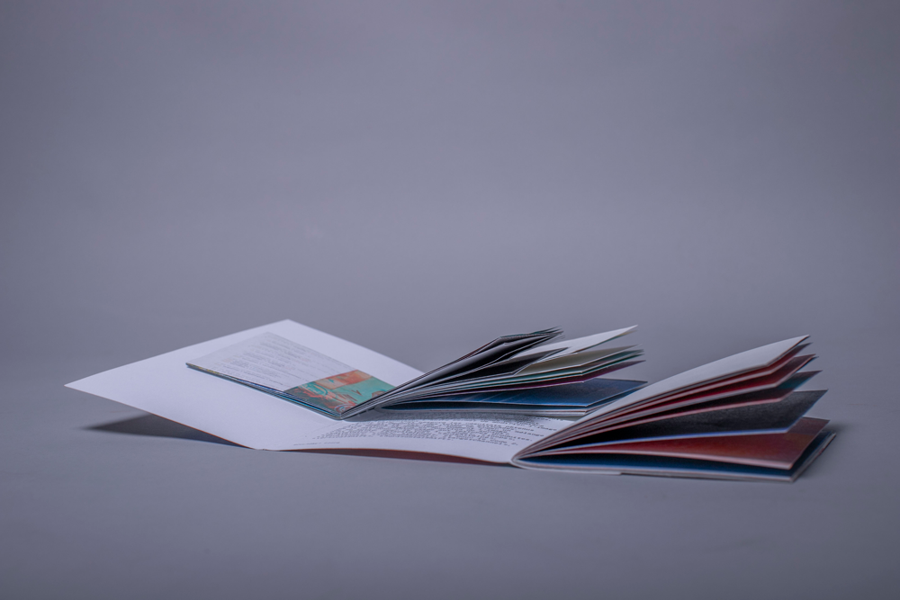
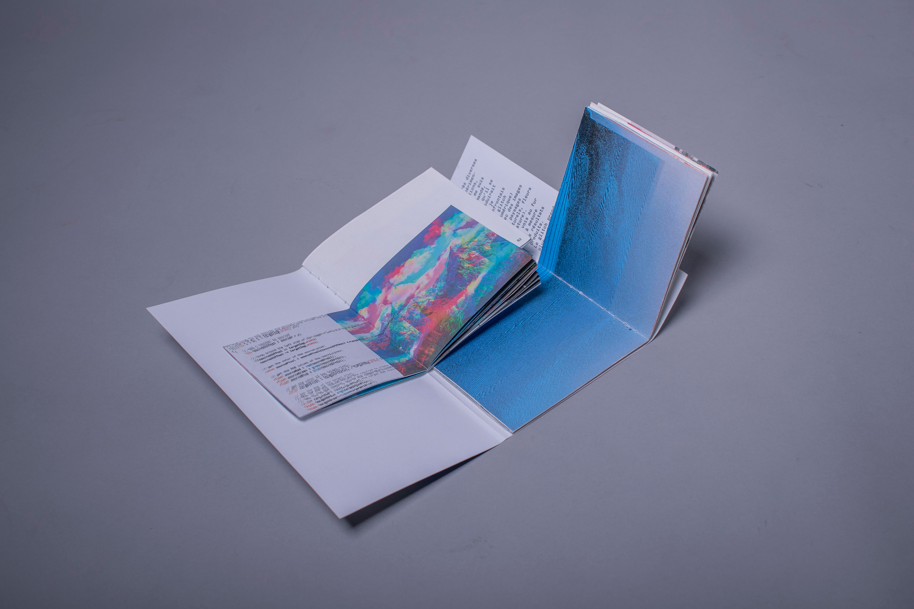
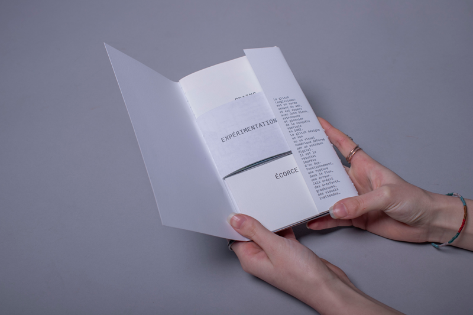
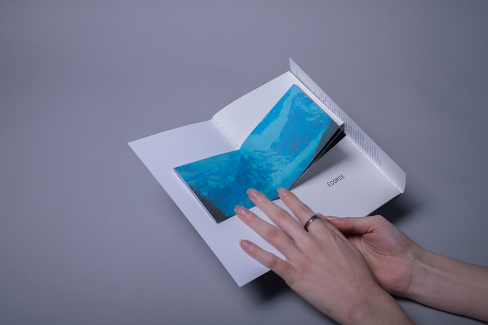
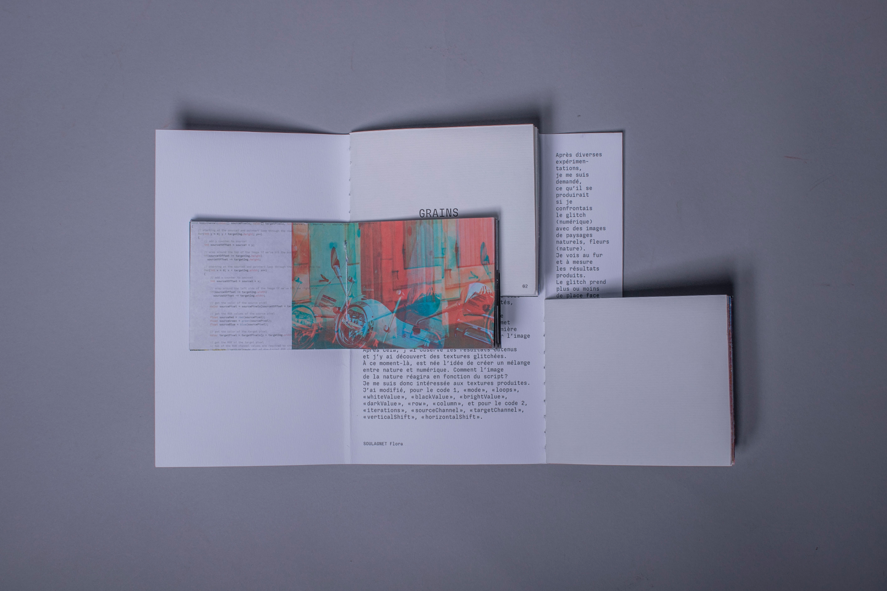
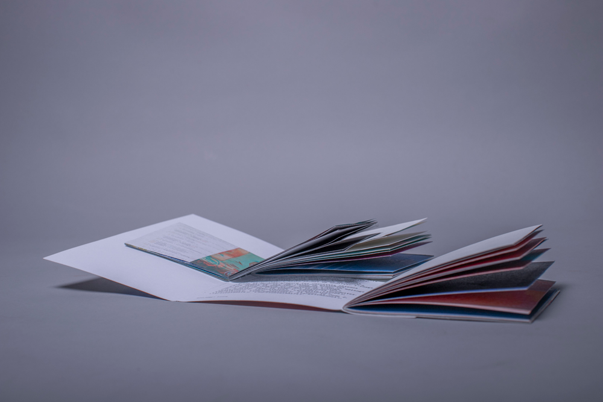
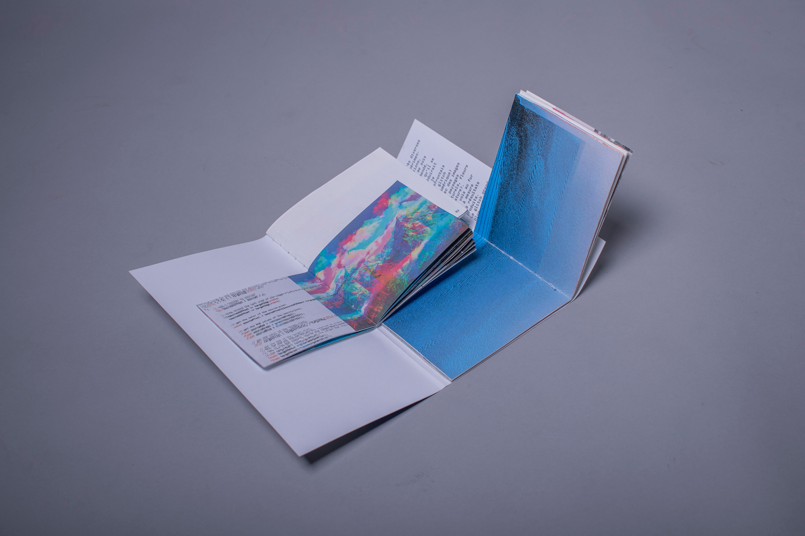
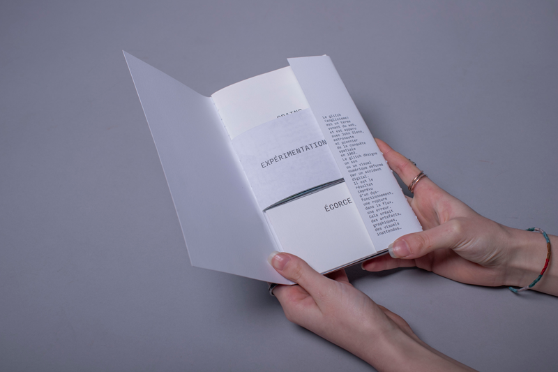
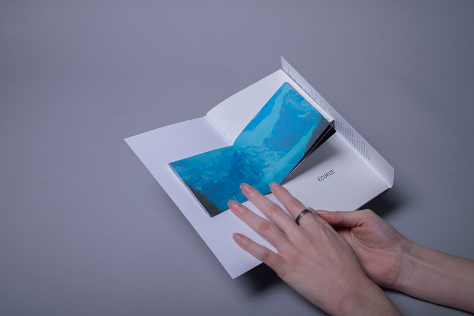
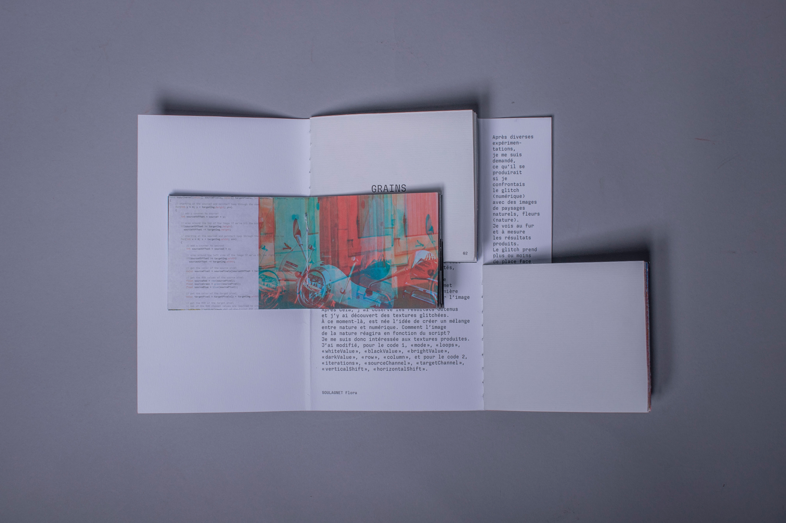

- Glitch
- Date : 02/2024 > 03/2024
- Domaine : code (Processing) & édition
À partir d'images que j'ai modifiées grâce aux scripts Processing, j'ai réalisé une édition qui retranscrit mon expérience de travail, ma démarche heuristique et ma réflexion. L'édition devait donc faire sens avec cette dernière.
 








